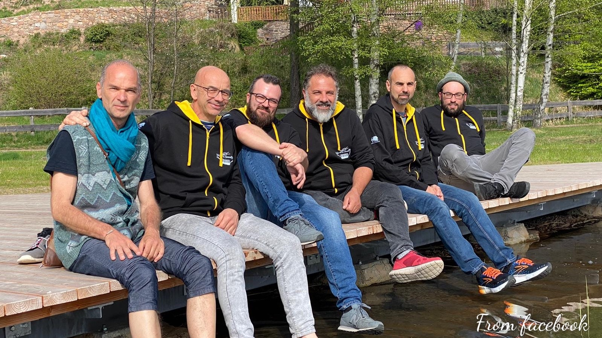
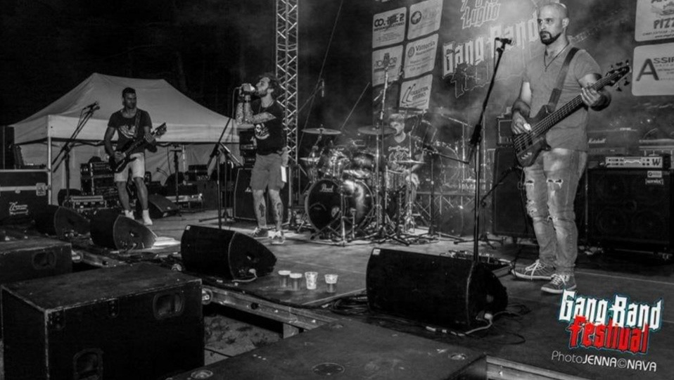
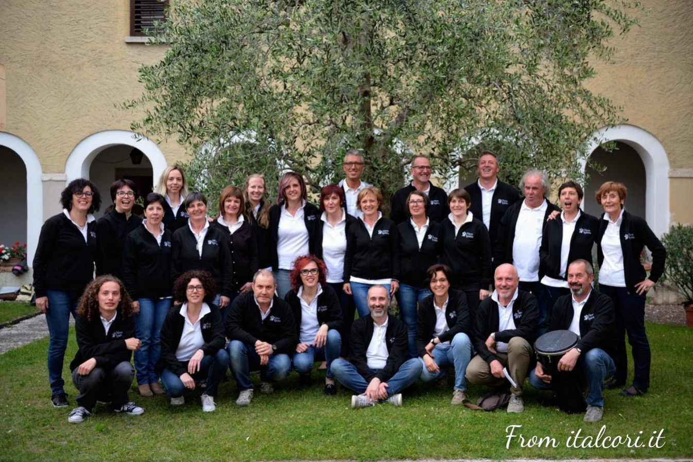
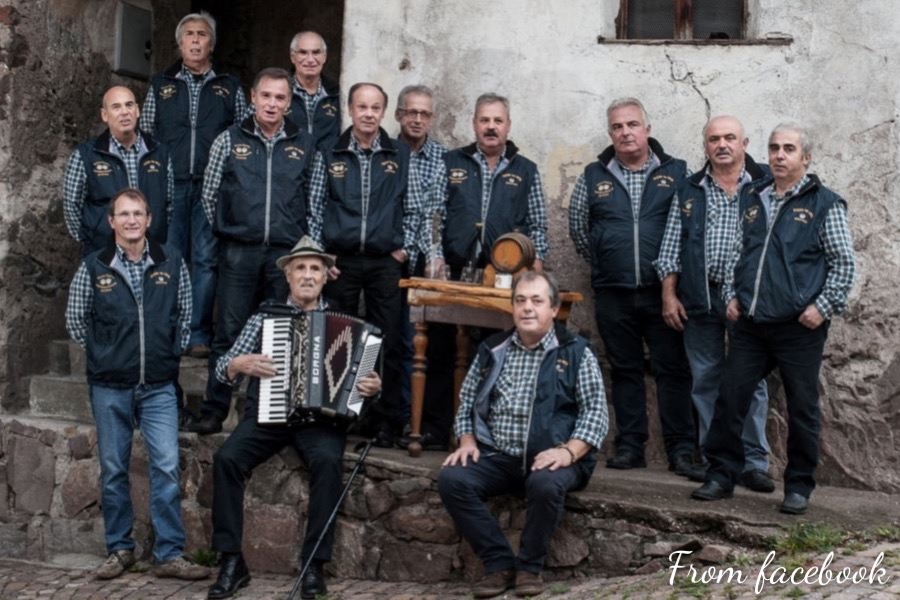
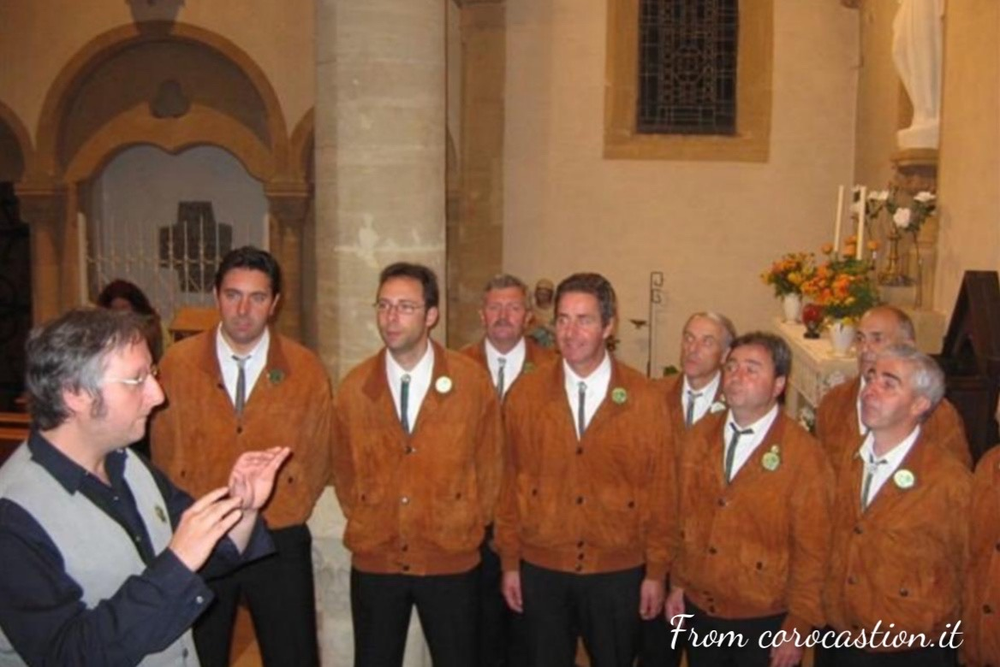

Musica Trentina -> Band della Val di Cembra

Niutenti
Nati nel 1998, i Niutenti sono una delle band più conosciute della zona. Il genere principale scelto dalla band è il Rock ma spazia anche nel pop contaminato. Gli album incisi sono due e diversi sono invece gli inediti.
Video
Social e contatti

Vortika
Nati nel 2008, i Vortika sono una rock band che spazia dai Led Zeppelin all'hard rock. Dopo alcuni anni la band ha inziato a proporre pezzi inediti, presenti anche nel disco pubblicato alcuni anni fa.
Video
Social e contatti
Musica Trentina -> Cori della Val di Cembra

Coro Novo Spiritu
Nato nel 1994, il Novo Spiritu è un coro gospel di Cembra. Il repertorio spazia tra vari generi musicali: da musica tradizionale afro-americana a canti inglesi, da musica trentina a musica sacra.
Video
Social e contatti

Coro Ghera na volta
Fondato nel 2009 a Grumes, il coro Ghera na volta deve i suoi natali a Emilio Santuari, famoso musicista del posto. L'organo intraprende canzoni di montagna e della tradizione popolare.
Video
Social e contatti

Coro Castion
Il coro Castion nasce nel 1966 a Faver. Il repertorio è incentrato sulle canzoni di montagna ma, negli ultimi anni, si sta spandendo verso più generi. L'organo ha inciso sei dischi, il principale sicuramente è "Canto e Decanto" nel 2006, presente anche su spotify.
Video
Social e contatti
Spotify